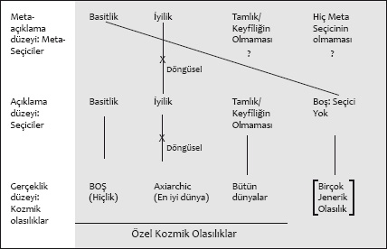

XII - BÜTÜN RUHLARDAN SONSÖZ
Hiçbir soru, neden bir Evren olduğu sorusundan üstün değildir: Neden hiçbir şey olmayacağına bir şey olduğu sorusundan.
DEREK PARFIT
Hep biliyordum; varlığın gizeminin çözümüne dair arayışım beni Oxford’a geri getirecekti. İşte ben de dönmüştüm, en göksel tabyasının, College of All Souls’un (Bütün Ruhlar Koleji) eşiğinde duruyordum. Kendimi biraz Zümrüt Şehir’in kapılarındaki Dorothy gibi hissediyordum. İçeride, “Neden hiçbir şey olmayacağına bir şey var?” sorusu hakkında pekala son sözü söyleyebilecek bir büyücü vardı. O sözü bana söylemeye tenezzül edeceğini umuyordum. O da öyle yaptı güzel bir üslupla. Hiç hesaba katmadığım şey, pazarlıkta bedava bir yemek kazanacağımdı.
Paris’ten Oxford’a dönerken, birkaç günlüğüne Londra’da durdum; değişiklik olsun diye değil, ciddi bir çalışma yapmam gerektiğinden. Pall Mall’da Athanaeum Kulübü’nde kalmak için bazı ayarlamalar yapmıştım. Bir cumartesi günü vardım. Kulüp hafta sonu nedeniyle kapalıydı. Ama zili çaldığımda kapıda bir kapıcı belirdi ve beni içeri aldı. Hafif loş antreden, üzerinde büyük bir saat asılı olan büyük merdivenin yanından geçtik. Saatin kaç olduğuna bakmak için kafamı kaldırdığımda, saatte yediyi gösteren iki rakam olduğunu, ama sekizi gösteren hiç rakam olmadığını gördüm. Bu nedir böyle, diye merak ettim yüksek sesle.
“Aslını astarını bilen yok, efendim,” dedi kapıcı, muhtemelen göz kırparak.
Gizem.
Antrenin sonunda eski ve küçük bir asansör vardı. Asansöre binip kulübün çatı katına çıktık. Ondan sonra dar koridorlardan oluşan bir labirentten geçerek yatak odama ulaştım. Odam kulübün küçük tarafındaydı, kulübün Waterloo’ya bakan revağının üstündeki Pallas Athena heykeline bakan birkaç küçük penceresi vardı. Ne mutlu ki odanın hemen bitişiğinde, ortasında eski moda bir küvet bulunan geniş bir banyo bulunuyordu.
Athanaeum Kulübü’nün etkileyici bir kütüphanesi vardı; ama ben kendi okuyacağım şeyleri Londra’ya getirmiştim. Birkaç sahnesi bu kulübün Dorik sütunlu revağının üstünde geçen bir Trollope romanıyla London Review of Books’un eski bir sayısından kesilmiş, Derek Parfit adlı bir İngiliz filozofun kalem aldığı bir deneme. Denemenin başlığı şöyleydi: “Why Anything? Why This?”[195] (“Neden Bir Şey? Neden Bu?”)
Ender rastlanan orijinalliğe sahip bir düşünür olarak Derek Parfit’e aşinalığım üniversite günlerine uzanıyordu. Bir yaz tatilinde, sırt çantamla Avrupa’yı dolaştığım günlerde, yanımda akıl felsefesi üzerine küçük bir antoloji bulunuyordu. Antolojinin “Kişisel Kimlik” başlıklı son makalesi, Parfit tarafından kaleme alınmıştı; Salzburg’dan Venedik’e uzun bir tren yolculuğunda bu makaleyi nasıl okuduğumu, nasıl benlik duygum sarsılmış bir halde bitirdiğimi hiç unutmayacağım. (O tren yolculuğu sırasında tükettiğim ekmek, peynir, kurutulmuş sosislerin de cismanilik hissimi nasıl kuvvetlendirdiğini de hiç unutmayacağım.) Parfit farklı benliklerin peş peşe eklenmesini ve bölünmesini gerektiren bir dizi parlak düşünce deneyiyle, Proust’u bile hayrete düşürebilecek bir sonuca varıyordu: Önemli olan kişisel kimlik değildir. Kalıcı, benzer “Ben” bir kurgudur, bir olgu değildir. Bir öğrenciyken Parfit’in denemesini okuyan yeni yetme JH ile bu kelimeleri yazan, hayatının sonbaharındaki JH’nin aynı benlik olup olmadığı sorusunun kesin bir cevabı olmayabilir.
Parfit’i ilk kez işte böyle tanımıştım. Parfit, bundan birkaç yıl sonra, 1984’te (o sıralarda Columbia Üniversitesi’nde felsefe yüksek lisans öğrencisiydim) Reasons and Persons adlı büyük bir kitap yayınlamıştı. Bu kitapta, kişisel kimlik kuramının, ahlak ve akılcılık, gelecek kuşaklara karşı yükümlülüklerimiz ve ölüme karşı tavrımız açısından sonuçları üzerinde uzun uzadıya duruyordu. Parfit’in vardığı sonuçların birçoğu (kendimizin inandığı kişi olmadığımız, öz çıkarımıza aykırı hareket etmenin genellikle akılcı olduğu, standart ahlakçılığımızın mantıken kendi kendisini yenilgiye uğrattığı) doğrusunu söylemek gerekirse endişe vericiydi. “Hakikat, inanmaya meylettiğimizden çok farklıdır,”[196] diyordu yazar serinkanlılıkla. Ama Parfit’in argümanları o kadar berrak, o kadar kuvvetliydi ki kitap İngilizce konuşulan felsefe dünyasında hatırı sayılır bir yorum sektörünün doğmasına yol açmıştı. Parfit şimdi de gözlerini beni cezbeden soruya, kendisinin de en “üstün” soru olarak gördüğü soruya çevirmişti: Neden hiçbir şey olmayacağına bir şey vardı? Bu meseleyle ilgili düşüncelerini de yer yer veciz olsa da özlü bir makalede toplamayı başarmıştı; onunla buluşmadan önce bu makalenin hakkından gelmem gerektiğini biliyordum.
Ve de onunla buluşacaktım. Birkaç ay önce kendine yazdığımda Parfit, “’Neden hiçbir şey olmayacağına bir şey var?’ sorusuna hâlâ çok büyük bir ilgi duyuyorum,” diye cevap vermişti. Önerdiğim söyleşiyle ilgili olarak da, “Beğeneceğime eminim,” diye yazmıştı. Ne var ki düşüncelerini formüle etme konusunda çok yavaş olduğundan, söylediklerinden harfi harfine alıntı yapılmasını tercih etmeyecekti. Yazılı çalışmaları hakkındaki sorularımı, “evet” ya da “hayır” diyerek veya başka bir kısa açıklamayla cevaplamaya çalışacaktı.
Hafta sonunun büyük bir bölümünü Athanaeum’un çatısı altında banyo küvetinde, memnun mesut okuyarak, suya dalarak, kapıcının kulübün mahzeninden getirdiği bordeaux şarabını yudumlayarak ve düşünüp taşınarak geçirdim. Winston Churchill görse takdir ederdi.
Dünya hakkında sorabileceğimiz, geniş kapsamlı iki soru vardır: Neden vardır? Nasıl vardır? Şimdiye kadar karşılaştığım düşünürlerin çoğu, önce “neden” sorusunun geldiğine inanıyordu. Çünkü ancak dünyanın neden olduğunu bilirseniz, nasıl olduğuna dair gayet iyi bir kavrayışınız olur diyorlardı. Diyelim ki John Leslie gibi, ondan önceki Platon ya da Leibniz gibi dünyanın var olması gerektiği için var olduğuna inanıyorsunuz. Bu durumda, dünyanın çok iyi bir dünya olmasını beklersiniz. Dünyanın gözlediğiniz kısmı özellikle iyi görünmüyorsa eğer, yine tıpkı Leslie gibi, bütünü itibarıyla çok iyi olan, aslına bakılırsa sonsuz derecede iyi, daha geniş kapsamlı bir gerçekliğin küçük bir parçasından ibaret olması gerektiği sonucuna varırsınız.
Bu durumda, dünya hakkında akıl yürütmenin bir yolu, “neden”den “nasıl”a geçmektir. Ama o kadar belirgin olmayan başka bir yolsa, tam tersi yönde hareket etmektir. Diyelim ki dünyaya bakıyorsunuz ve onu gerçekliğin alabileceği başka bütün biçimlerden ayıran özel bir yönü olduğunu fark ediyorsunuz. Dünyanın nasıllığıyla ilgili bu tuhaflığın, dünyanın neden olduğuna dair bir ipucunu ortaya çıkarabileceğini düşünebilirsiniz.
Keşfettiğim kadarıyla, Parfit’in yaklaşımının özünü, “nasıl”dan “neden”e doğru ilerlemek oluşturuyordu. Olağan açıklama çizgisini tersine çevirmesi, varoluşun gizemini tümüyle yeni bir ışıkta görmemi sağlamıştı.
Parfit, gerçekliğin aldığı anlaşılan bütün farklı biçimleri, yolları düşünün, diye başlıyordu. Olası yollardan biri, tabii ki kendi dünyamızdı, 14 milyar yıl önce Büyük Patlama’yla birlikte varlık bulan evrendi. Ama gerçeklik, bizim dünyamızdan fazlasını içeriyor olabilirdi. Bizim onlara doğrudan erişimimiz olmasa da bizim dünyamıza paralel olarak var olan başka dünyalar olabilirdi. Bu dünyalar, tarihleri, onlara hükmeden kanunlar (ya da böyle kanunların bulunmaması), onları oluşturan maddelerin nitelikleri gibi önemli açılardan birbirlerinden farklı olabilirlerdi. Parfit, tek tek bu dünyaların her birine “yerel” olasılık diyordu. Hep birlikte var olabilecek tek tek dünyaların oluşturduğu topluluğun tamamı da “kozmik” bir olasılık oluşturuyordu.
Parfit, “Kozmik olasılıklar, her zaman var olan her şeyi kapsar; gerçekliğin alabileceği farklı biçimler vardır. Bu olasılıklardan sadece bir tanesi, gerçek, yani süregelen dünya olabilir. Yerel olasılıklar, gerçekliğin bir kısmının, yani yerel dünyanın alabileceği farklı biçimlerdir. Bazı yerel dünyalar varsa, bu durum diğer dünyaların var olması olasılığına kapı aralar,” diyordu.
Peki ne tür kozmik olasılıklar vardır? Kozmik olasılıklardan biri, düşünülebilir her dünyanın var olmasıdır. Parfit, buna bütün gerçekliklerin en eksiksizi, “bütün dünyalar” olasılığı der. Diğer uçta hiçbir dünyanın var olmadığı kozmik olasılık vardır. Bu, Parfit’in “Boş” dediği olasılıktır. Bütün Dünyalar olasılığıyla Boş olasılık arasında sonsuz sayıda ara kozmik olasılık yer alır. Bu olasılıklardan biri de sadece ve sadece iyi dünyaların var olması olasılığıdır, yani var olan bütün dünyalar etik bakımdan hiçbir şeyden iyidir. Bu, John Leslie’nin “axiarchic” olasılığıdır. Başka bir kozmik olasılık da dünyamızın ve ona benzer, ama biraz farklı 57 dünyanın var olmasıdır. Buna “58 dünya” olasılığı denebilir. Bir başka olasılık da sadece belli bir fiziksel kanunlar kümesine, diyelim ki sadece sicim kuramı kanunlarına uyan dünyaların var olmasıdır. Sicim kuramının mevcut versiyonuna göre bu gibi dünyaların sayısı 10’un beş yüzüncü kuvveti kadardır, fizikçilerin “Manzara” dedikleri kozmik bir topluluk oluştururlar. Yine bir başka olasılık da sadece bilinçten yoksun dünyaların var olmasıdır. Buna “Zombi” olasılığı denilebilir. Bir başka olasılık da her biri tek renk, tam yedi tane dünya bulunmasıdır: Bu dünyalar, sırasıyla kırmızı, turuncu, sarı, yeşil, mavi, indigo ve leylak rengidir. Buna “Tayf” olasılığı denebilir.
Bu gibi kozmik olasılıklar yelpazesi, gerçekliğin alabileceği her biçimi temsil eder. Kesin hiçlik bile, “Boş” olasılık biçiminde hesaba katılmıştır. (Öte yandan mantıken imkansız olan şeyler hesaba katılmamıştır; örneğin kare çemberler ya da evli bekarlardan oluşan bir kozmik olasılık yoktur.) Gerçekliğin alabileceği bütün olası biçimlerden sadece bir tanesinin süregelen dünya olması gerekir.
Bu da iki soru doğurur. Hangisi süregelen dünyadır? Ve neden?
Parfit gözlemlerine, “Bu sorular birbiriyle bağlantılıdır,” diyerek devam eder. “Bazı olasılıkları açıklamak daha kolay olursa, o olasılığın süregeldiğine inanma gerekçemiz daha fazla olur.”
Öyle görünüyor ki bütün kozmik olasılıkların en az kafa karıştıranı Boş olasılıktır, hiçbir şeyin olmaması olasılığıdır. Leibniz’in de işaret ettiği üzere, bu en basit olası gerçekliktir. Ayrıca nedensel bir açıklamaya ihtiyacı olmayan tek olasılıktır. Eğer hiç dünya yoksa, bu dünyaları hangi şeyin ya da gücün ortaya çıkardığına dair herhangi bir soru da sorulamaz.
Ama Boş olasılık, besbelli ki gerçekliğin almayı tercih ettiği biçim değildir. Parfit, “Şu ya da bu şekilde, bir Evren var olmayı başarmıştır,” gözleminde bulunur.
Peki bir evrenin var olduğu gerçeğiyle tutarlı olan, en az kafa karıştıran olasılık nedir? Bu, Bütün Dünyalar olasılığı, yani olası bütün evrenlerin var olması olasılığı olacaktır. Parfit, “Başka bütün kozmik olasılıklarla birlikte başka bir soru daha gündeme gelir. Eğer bizim dünyamız tek dünyaysa, şu soruyu yöneltebiliriz: ‘Olası bütün dünyalar arasında neden bu dünya vardır?’ Çok Dünyalı Hipotez’in herhangi bir versiyonuyla ilgili olarak da benzer bir soru yöneltebiliriz: ‘Neden bu elementler ve bu kanunlarla sadece bu dünyalar vardır?’ Ama eğer bütün bu dünyalar varsa, böyle başka bir soru daha sorulamaz.”
Dolayısıyla Bütün Dünyalar olasılığı, kozmik olasılıklar arasında en az keyfî olandır; çünkü hiçbir yerel olasılık dışlanmamıştır. Bildiğimiz kadarıyla bütün olasılıklar arasında en eksiksizi olan bu olasılık, aslında gerçekliğin aldığı biçim olabilir.
Peki ya diğer kozmik olasılıklar? Eğer dünyamızın net iyilik puanı, sıfırın üstündeyse, varlığın etik bakımdan en iyisi olduğu Axiarchic dünyalar topluluğunun bir parçası olabilir. Ya da Steven Weinberg’in hayal ettiği nihai kuram uyarınca, dünyamıza hükmeden kanunların istisnai derecede zarif oldukları anlaşılırsa, dünyamız en güzel kozmik olasılığın bir parçası olabilir. Ya da Schopenhauer ve Woody Allen haklılarsa, dünyamız pekala en kötü kozmik olasılığın bir parçası olabilir.
Mesele şudur ki bu kozmik olasılıkların her birinin özel bir yönü vardır. Boş olasılık en basit, Bütün Dünyalar en eksiksiz, Axiarchic en iyi vs. Şimdi diyelim ki aslında süregiden kozmik olasılık, böyle özel bir yönü olan bir olasılıktır. Herhalde bu bir tesadüf değildir. Herhalde bu olasılık, bu özel yöne sahip olduğu için süregidiyordur. Eğer mesele böyleyse, aslında bu özel yön, gerçekliğin neye benzeyeceğini seçer. Parfit buna “Seçici” der.
Bir gerçekliğin alabileceği özel yönlerin hepsi de itibar edilesi bir Seçici sunmaz. Örneğin, diyelim ki gerçekliğin yukarıda bahsettiğimiz 58 Dünya olasılığı gibi olduğu anlaşıldı. Şimdi 58 sayısının özel bir yönü vardır: Yedi farklı asal sayının toplamı olan en küçük sayıdır (2+3+5+7+11+13+17=58). Ama hiç kimse bu özelliğin, gerçekliğin neden, olduğu gibi olduğunu açıklayabileceğini düşünmez. Dünya sayılarının 58 olduğunu varsaymak, akla daha yatkın olabilir. Fakat en iyi, en eksiksiz, en basit, en güzel, en az keyfî gibi özellikler farklıdır. Eğer gerçeklik olduğu anlaşılan olasılığın bu özelliklerden birine sahip olduğu anlaşılırsa, bunu bir şans eseri olarak görmek mümkün olmayacaktır. Kozmik olasılığın, bu özelliğe sahip olduğu için gerçeklik haline gelmiş olması daha büyük bir olasılıktır.
Ama bu “için”in kullanımı biraz gizemli değil mi? Parfit, elbette ki öyle, diye kabul eder. Ama sıradan nedenselliğin bile gizemli olduğuna işaret eder. Ayrıca, “Gerçekliğin tamamı için bir açıklama bulunuyorsa, bu açıklamanın bildik bir kategoriye düzgünce oturmasını beklemememiz gerekir. Bu olağanüstü sorunun olağanüstü bir cevabı olabilir,” der.
Fark ettim ki, Parfit’in yapmayı başardığı şey, varoluşun gizemini çok daha az gizemli kılacak şekilde yeniden çerçevelemekti. Başka herkes varlık ile hiçlik arasında kapatılamayan uçurumu kapatmaya çalışırken Parfit ontolojik bir piyango açmıştı. Yoksa daha çok bir güzellik yarışmasına mı benziyordu, Miss Kozmos Geçiti’ne mi? Yarışma alanları, gerçekliğin alabileceği bütün farklı biçimlerden oluşuyordu; bütün kozmik olasılıklardan. Gerçekliğin şu ya da bu şekilde olması gerektiğinden, bu kozmik olasılıklardan biri, mantıksal zorunluluk gereği baskın çıkmalıydı. Tahayyül edilebilir başka bir alternatif yoktu; bu yüzden de bir seçimin yapılmasını sağlayacak bir tür “gizli mekanizma”ya da ihtiyaç yoktu. Dolayısıyla Seçici, sonucu belirlerken herhangi bir kuvvet uygulamıyor, fiilen bir iş yapmıyordu.
Ama, merak ediyordum, ya hiç Seçici yoksa?
Okuyarak, arpacı kumrusu gibi düşünerek, yıkanarak ve kestirerek geçirdiğim yalnız hafta sonunun ardından pazartesi sabahı Athenaeum Kulübü’nün rahat yemek salonuna inmek, Savile Row takım elbiseleri ve Turnbull & Asser gömlekleriyle kahvaltıya hoş bir biçimde gelmiş genç kentli Londralıları görmek çok hoştu. Bütün bu metafiziksel bilmecenin ötesinde, başka şeyler (hatta çok daha önemli başka şeyler) olduğunu da hatırlattı. Bir Daily Telegraph aldım, bir masaya tek başıma oturdum, yumurta, tütsülenmiş ringa balığı ve ağır ateşte pişirilmiş domatesten oluşan büyük yağlı bir kahvaltı ısmarladım. Enfesti. Birkaç saat sonra, kendimi günün o saatinde genelde hissettiğimden daha doygun hissederek Paddington İstasyonu’ndan Oxford’a giden bir trene biniyordum.
Oxford’a giderken, dünyamız için Seçici’nin ne olabileceği üzerine düşünmeye devam ettim. Besbelli ki basitlik değildi. Çünkü öyle olsaydı, gerçeklik yarışmasının sonucu hiç kuşkusuz Boş Olasılık olurdu. O sırada trenimin geçtiği Londra banliyöleri yavan, donuk, ruhsuz, nasıl olursa olsun hiçbir şey değillerdi.
John Leslie’nin inandığı üzere, Platonik iyiliğin Seçici olabilmesine gelince, bu çok kanlı mefhumu uzun zaman önce geride bırakmıştım. Parfit de öyle. “Dünyamızın olabilecek en iyi Evren’in en az iyi kısmı olduğundan yana kuşkuya kapılabiliriz,” diyordu önemsemez bir tavırla.
Ama bu dünya, etik bakımdan seçilmiş olamıyorsa da başka bakımlardan özelmiş gibi görünür. Düzenli nedensel örüntüler gösterir. Ayrıca dünyaya hükmeden kanunlar, en derin düzeyde dikkat çekici derecede basit görünür, o kadar basittirler ki Steven Weinberg haklıysa, bilim insanları bugün onları keşfetmenin eşiğine gelmişlerdir. Hiç kuşku yok ki, bu iki özellik, yani nedensel düzenlilik ve nomolojik basitlik, gerçek dünyayı o büyük karmaşık, dağınık kozmik olasılıklar grubundan ayırır.
Bu düşünme biçimi, Parfit’i gerçeklik için en az iki “kısmi Seçici” olduğu yönünde mütereddit bir sonuca getirmişti: Kanunların hükmünde olmak ve basit kanunlara sahip olmak. Peki henüz farkına varmadığımız başka seçiciler de olabilir miydi? Muhtemelen. “Ama gözlemler, yolun ancak bir kısmını almamızı sağlayabilir,” gözleminde bulunuyordu Parfit: “Daha ileriye gideceksek bunun tümüyle saf akıl yürütme sayesinde gerçekleşmesi gerekir.” Bu akıl yürütme biçimi, gerçekliğe hükmeden en yüksek ilkeye ulaşmayı amaçlar; fizikçilerin keşfetmeye çalıştığı ilke. Parfit, dolayısıyla “bu noktada felsefe ile bilim arasında açık bir sınır yoktur,” diyordu.
Merhaba! Güneş tam tepedeyken tren çoktan Oxford’un içine girmişti.
Tren istasyonundan şehrin içine kısa bir yürüyüş yapmak gerekiyordu; artık bu yürüyüşün aşinası olmuştum. Parfit, mektubunda “Öğleden sonra birde High Street’teki All Souls College’a gelin ve kapıcıdan beni kolejin kapısındaki locadan aramasını rica edin,” diye yazmıştı.
Öldürmem gereken biraz zaman olduğundan, Broad Street’te Blackwell’e girdim, İngilizce konuşulan dünyadaki en iyi akademik kitabeviydi. Alt kattaki geniş felsefe bölümüne indim, burada biraz arandıktan sonra yaşayan en büyük filozofların Steve Pyke tarafından çekilmiş foto-portrelerinin yer aldığı harika bir kitap buldum. Parfit de bunlar arasındaydı. Çarpıcı bir görünümü olduğu su götürmezdi: İnce dudakların, mermersi bir burnun, geniş düşünceli gözlerin öne çıktığı, neredeyse çene hizasına kadar başının iki yanından sarkan gür ve kıvırcık gümüşsü saçların taçlandırdığı uzun bir yüz. Fotoğrafların her birinin yanında, poz veren filozofun kişisel bir ifadesine yer verilmişti. Parfit’in fotoğrafının yanında şunlar yazıyordu: “Cevapları duygularımızı etkileyebilecek, akılcı ve ahlaki anlamı olan metafizik sorular beni en fazla ilgilendiren şeylerdir. Evren neden vardır? Hayatlarımız boyunca bizi aynı insan kılan şey nedir? Özgür irademiz var mıdır? Zamanın geçişi bir yanılsama mıdır?”[197]
On beş dakika sonra, All Souls’un biraz göz yıldıran kapısından içeri bakıyordum. Bir tabelada “KOLEJ KAPALIDIR” diyordu, bir diğerinde “LÜTFEN SESSİZ OLUN”. Kapının arkasında, çimlerin iki dikdörtgen şeklinde biçildiği bir avlu görünüyordu.
Kendimi kolejin kapıcısına tanıttım; asık suratlı bir görünümü vardı, müstakbel ev sahibi aradıktan sonra beklemeye başladı.
All Souls (Bütün Ruhlar) tarihsel önemi olan, hikayelere konu olmuş bir yerdi. (“Hep ruhlar, bedenlere yer yok,” denir bir fıkrada.) 1960’larda Oxford’da lisans öğrenimi görürken, zaman zaman All Souls’u ziyaret edenlerden biri de Christopher Hitchens’tı; Hitchens burayı “Hiç öğrenci kabul etmeyen, sadece ‘mensupları’nın ulvi ayrıcalıklarını gözeten süslü bir antikacı dükkanı; bütün eşitlikçilere göre bir günah yuvası, geceleyin av eti ve porto şarabıyla yapılan sefahatin gümüş şamdanlar ve kadehlerle süslendiği bir yer,”[198] diye betimliyordu. All Souls’un yetmiş altı mensubu, İngiliz akademilerinin ve kamusal hayatının en saygın kesimlerinden seçilir. Ders vermek gibi bir görevleri olmadığından, görkemli bir ortamda katıksız bir akademisyenlik ve spekülatif düşüncenin damgasını vurduğu (herhalde iç siyaset ve dedikoduların rahatlattığı) bir hayat sürmekte serbesttirler. Parfit, biraz olağan dışı bir biçimde, meslek hayatının tamamını burada geçirmişti, 1967’de Balliol Koleji’nde tamamladığı lisans öğreniminin hemen ardından, All Souls’a “burslu mensup” olarak seçilmişti.
İşte oradaydı, avluyu çevreleyen binalardan bir köşegen çizerek bana doğru geliyordu; uzun boylu, güleryüzlü bir tip sallana sallana yaklaşıyordu; dağınık gümüşsü saçları biraz önce gördüğüm fotoğrafı hatırlatıyordu. Biraz kızarmış yüzüne uygun düşen parlak kırmızı bir kravat takmıştı. El sıkışıp selamlaştık. Şarap eşliğinde uzun bir öğle yemeği için onu High Street’te en iyi restoranlardan birine götürmeyi teklif ettim.
“Hayır,” dedi, “Ben size öğle yemeği veriyorum.”
Beni kolejin içine aldı. “Oxford’daki en güzel manzaradır bu,” diye gösterdi Radcliffe Camera’ya, Oxford’un eski kütüphanesine bakan geniş bir pencereden işaret ederek. “Kubbe Hawksmoor’a aittir!”
Parfit’in mimari fotoğraflara meraklı olduğunu duymuştum.
All Souls mensuplarına öğle yemeği, “Buttery”de, tavanı ağır süslemelerle bezenmiş, akustiği epeyce yankı yapan gotik bir yemek odasında sunuluyordu. Parfit beni açık büfeye davet etti; tabağımı avokado salatasıyla doldurup ekmek aldım. Oturup yemeye ve sohbete daldık.
Parfit hayatını anlattı. Küçük bir çocukken çok dindar olduğunu, ama sekiz dokuz yaşlarındayken dinden vazgeçtiğini anlattı. Çarmıha gerilme tablolarına bakarken en fazla kötü hırsıza acıdığını hatırlıyordu: “Çünkü İsa ve iyi hırsızın tersine, o cehenneme gider ve çarmıhta acı çekip ölür.”
Sonra matematikten bahsedip, matematiğinin berbat olduğunu söyledi. Matematiğin bu kadar karmaşık olmasına hayret ediyordu. Bir matematikçi ona, matematiğin yüzde 80’inin sonsuzluk hakkında olduğunu söylemişti. Bir sonsuzluktan fazlası olduğunu öğrenmek onu korkutmuştu!
Babası bilim insanı olmasını istese de o filozof olmaya karar vermişti. Felsefenin “bilimselleştirilmesi”nden nefret ediyordu; ona göre bunun ardındaki başlıca etki kaynakları Quine ve Wittgenstein’dı. Epistemolojinin “doğallaştırılması”ndan, bilgimizi gerekçelendirme projesinin filozoflardan alınıp bilişle ilgilenen bilim insanlarına verilmesi fikrinden de nefret ediyordu.
Sonra sohbetimiz ahlak felsefesine geldi, Parfit o sıralar başlıca ilgi alanının ahlak felsefesi olduğunu söyledi. Bu günlerde, birçok ahlak felsefecisinin tersine, ahlaki olmak için eğilimlerimize dayanmayan nesnel gerekçelerimiz olduğuna inanıyordu, “bu iddiayı, üniversiteli olmayan bir dinleyici kitlesinin önünde savunmak zorunda kalmaktan mahcup olacağını” da ekledi. Çağdaş filozofların savunduğu bazı çılgın görüşlere, örneğin sadece arzuların gerekçeler yaratabileceği fikrine hayret ettiğini söyledi.
Parfit, böyle nahoş fikirlerden bahsederken, sanki acı çekiyormuş gibi kendisini geri çekiyor, genellikle de hiddetle kollarını süslü tavana doğru kaldırıyordu. Beğendiği görüşleri ileri sürerken de aynı ölçüde hareketliydi; bana doğru eğiliyor, gülümsüyor, kuvvetle başını sallıyordu.
Öğle yemeğimiz bittiğinde, şömine başında kahvelerimizi içip neden Hiçbir Şey olmayacağına Bir Şey var sorusu hakkında sohbet etmek üzere yandaki salona çekildik.
Daha önce de belirttiğim üzere, Parfit bu meseleyle ilgili kendi sözlerinden uzun alıntılar yapılmasına yanaşmıyordu. Ama sorularımı kısa olumlu ya da olumsuz cümlelerle cevaplayacağını söylemişti. Benim de biri kolay biri zor iki önemli sorum vardı.
Kolay soru hiçlikle ilgiliydi. Parfit açıkça hiçliğin tutarlı bir fikir olduğuna inanıyordu. Hatta hiçliğin gerçekliğin alabileceği biçimlerden biri olduğu kanısındaydı. “Hiçbir şeyin hiçbir zaman olmaması geçerli olabilir: Zihinlerin, atomların, uzayın, zamanın, hiçbirinin olmaması,” diye yazmıştı. Dolayısıyla hiçliği de Boş olasılık olarak kozmik olasılıklar arasında saymıştı.
Peki ama hiçlik aynı zamanda yerel bir olasılık mıydı? Yani bir varlık dünyasıyla bir arada var olabilir miydi?
Örneğin filozof Robert Nozick, olabileceğini düşünüyordu. Gerçeklik olabildiğince dolu olsaydı, düşünülebilen bütün dünyaları içerseydi, o zaman bu dünyalardan biri zorunlu olarak mutlak hiçlikten oluşuyor olurdu. En azından Nozick buna inanıyordu. Bu yüzden de “Neden Hiçbir Şey olmayacağına Bir Şey var?” sorusunun, Nozick’in düşünme biçimine göre basit bir cevabı olabilirdi: Yoktur. İkisi de vardır.
Nozick’in akıl yürütmesi, bir zamanlar Harvard’da öğrencisi olan sicim kuramcısı Brian Greene de dahil olmak üzere bazı bilim insanlarını ikna etmişti. Greene, “Nihai Çok Evrende hiçbir şeyden oluşan bir evren vardır,”[199] diye yazmıştı. Gerçeklik yine hem bir şeyi hem hiçbir şeyi içeriyordu.
Jean-Paul Sartre da, “Hiçlik Varlığa musallat olur,”[200] diyerek, biraz farklı bir açıdan onlara katılıyordu.
Ama gerçekliğin hem varlığı hem hiçliği kucakladığı kavrayışını ben yanlış buluyordum; bunu da Parfit’e söyledim. Bir şey-dünyalarının yanına bir “Hiçlik dünyası”nı eklemekten bahsetmenin ne anlamı olabilirdi? Çorak bir gezegen ya da bir boş uzay bölgesi eklemeye benzemeyecekti. Çünkü çorak bir gezegen bir şeydir. Büyük ölçüde herkesin hemfikir olduğu üzere, boş bir uzay bölgesi de öyle. Uzayın özellikleri vardır. Örneğin sonlu ya da sonsuz olabilir. Hiçlik böyle değildir.
Bu meseleyi bir denklem halinde ortaya koymak istiyordum:
Bir Şey + Hiçbir Şey = Bir Şey
Ama bu bile çok zayıf görünüyordu. “Hiçbir şey”i bir kozmik olasılığa eklemek boş bir hareketti. Hiçbir şeyle ilgisi yoktu.
Parfit bana hak verdi. Nozick ve diğerlerinin yanıldığı inancındaydı. Hiçlik yerel bir olasılık değildi, birçok dünyadan biri olamazdı. Hiçlik’le tutarlı tek gerçeklik, hiçbir dünyanın bulunmadığı gerçeklikti: Boş olasılıktı. İki farklı şey bulunabilir; ama hem bir şey hem hiçbir şey bulunamaz. Bu kesinlikle bir ya o/ya bu pazarlığıdır.
Parfit’e yönelttiğim ikinci soru daha derin bir soruydu. Parfit’in, Seçici dediği şeyin, gerçekliğin neden sahip olduğu gibi bir gerçeklik aldığına açıklama getirebileceğini düşünmekte haklı olduğunu varsayalım. Bu, meselenin son noktası mı olacaktı? Kozmik açıklama, Seçici düzeyinde mi durur? Yoksa belli bir Seçici’nin, akla yatkın rakip bütün Seçiciler arasında neden baskın çıkabileceğine dair başka bir açıklama yapılabilir mi?
Miss Kozmos Geçiti benzetmesini düşünelim. Yarışmacılar, gerçekliğin alabileceği düşünülen bütün biçimlerdir, bütün kozmik olasılıklardır. Bu yarışmacılardan birinin kazanan olması gerekir. Diyelim ki kazanan, etik olarak en iyi kozmik olasılık oldu: Miss Sonsuz İyi. Bu durumda jürinin Seçici olarak iyiliği kullandığından şüphelenebiliriz: Nihayetinde bu Miss Sonsuz İyi’nin kazanan olmasını açıklayabilir. Ama jüriye Seçici olarak neden basitlik, zarafet ya da eksiksizliği değil de iyiliği kullandıklarını soramaz mıyız?
Öte yandan, diyelim ki Miss Kozmos Yarışması’nı kazananın hiçbir özel yönü yok. Diyelim ki Miss Vasat. Bu durumda, jürinin hiçbir Seçici kullanmadığından şüphelenebiliriz. Yarışmacıların neye benzediğini, özel meziyetlerinin neler olabileceğini dikkate almamışlardır. Sadece çöp çekmişlerdir. Ama jüri üyelerine kazananı belirlemek için neden bir Seçici kullanma zahmetine girmediklerini soramaz mıyız?
Parfit, daha ileri düzeyde kozmik bir açıklama yapmak gerektiğine katılıyordu. “Gerçeklik olduğu gibi olabilir ya da bir Seçici olabilir,” diye yazmıştı. “Bunların hangisi doğruysa o geçerli olabilir ya da daha yüksek bir Seçici olabilir. Bunlar, bir sonraki açıklama düzeyindeki farklı olasılıklardır; bu yüzden de elimizdeki iki soruya geri döndük: Hangisi süregelen evrendir ve neden?”
Bu yüzden de öncelikle, gerçekliğin neden olduğu gibi olduğunu açıklamak için bir Seçici’ye ihtiyacınız vardır. Sonra, dünyanın nasıl olduğunun seçilmesinde neden o Seçici’nin etkili olduğunu açıklamaya yönelik, bir sonraki açıklama düzeyinde bir meta-Seçici gerekir. Sonra, neden o meta-Seçici’nin kullanıldığını açıklamak için, daha yüksek bir açıklama düzeyinde bir meta-meta-Seçici’ye gerek duyarsınız. Böyle devam eder bu. Bu geriye doğru ilerleyen açıklama, bir sona ulaşabilir mi? Ulaşabilirse, nasıl son bulabilir? Daha yüksek bir Seçici’yle mi? O zaman nihai çıplak gerçek bu olmayacak mıdır?
Bu soruyu Parfit’e yönelttiğimde, gerçekliği açıklama arayışının böyle çıplak bir hakikatle son bulabileceğini kabul etti. Bundan nasıl kaçınılabilirdi? Seçici’nin kendi kendisini seçeceğini söyleyerek kaçınmaya çalışabilirdiniz. Örneğin iyiliğin daha yüksek Seçici olduğu anlaşılırsa, en iyisi için olduğundan, bunun doğru olduğu söylenebilirdi. Yani iyilik, gerçekliğin hakimi olarak kendi kendisini seçmiştir, denilebilirdi. Ama Parfit bunu kabul etmiyordu. “Nasıl ki Tanrı kendi kendisini var edemezse, hiçbir Seçici de kendi kendisini en yüksek düzeyde hükmeden Seçici kılamaz,” diyordu. “Hiçbir seçici, hükmedip hükmetmeyeceğini belirleyemez; çünkü hükmetmiyorsa, hiçbir şeyi belirleyemez.”
Yine de Parfit, çıplak bir hakikatle son bulan bir açıklamanın, hiç açıklama olmamasından daha iyi olduğunda ısrar ediyordu. Aslında bilimsel açıklamaların hiç değişmez bir biçimde bu biçimi aldığını gözlemişti. Böyle bir açıklama, en büyük ölçekte gerçekliğin aslında nasıl olabileceğini keşfetme konusunda bize yardımcı olabilirdi; diyelim ki gerçekliğin bizimkinin ötesinde dünyalardan oluştuğuna inanmamız için bize bir gerekçe sunabilirdi.
Parfit kahvesini yudumlarken, hafta sonu hazırladığım küçük tabloyu çıkardım. Çeşitli Seçicilerin birbirleriyle ve gerçeklikle nasıl ilişkili olabileceklerini gösterdim. Kağıdın alt kısmında gerçeklik düzeyini belirtmiştim. Buraya Parfit’in bahsettiği bazı kozmik olasılıkları yerleştirmiştim. Bunun üst kısmında (ilk açıklama düzeyinde) akla yatkın bazı Seçicileri karalamıştım. Bunun üstündeki düzeyde (ikinci açıklama düzeyinde) bazı meta-Seçicileri belirtmiştim. Sonra farklı düzeyler arasına oklar çizerek süregidebilecek çeşitli açıklayıcı ilişkileri göstermiştim. Şema, bir sonraki sayfadaki şekli almıştı:
“Bakıyorum, bütün mantıksal açılımları değerlendirmişsiniz,” dedi Parfit, öne eğilip çıkardığım şemaya göz gezdirirken.
Bu açılımların çoğunu Parfit önceden çizmişti; epeyce doğrudan ulaşılabilecek sonuçlardı. Örneğin Basitlik Seçicisi, kozmik olasılıklar arasında Boş olasılığı seçer. Dolayısıyla hiçbir şey olmasaydı, bu gerçekliğin alabileceği en basit biçimin hiçlik olduğu gerçeğiyle açıklanabilirdi.
Benzer şekilde, İyilik Seçicisi de Axiarchic olasılığı, sadece iyi dünyalardan oluşan bir evreni seçiyordu. Dolayısıyla eğer gerçekliğin bu biçimi aldığı anlaşılırsa, bu durum, bunun gerçekliğin olabileceği en iyi biçim olduğu gerçeğiyle açıklanabilirdi. Ama gerçeklik bu biçimi aldıysa, İyilik Seçicisi’nin hükmettiği gerçeğini ne açıklayabilirdi? İyilik Seçicisi’nin, bu kadar iyi olduğundan, meta-düzeyde İyilik tarafından seçilmesi açıklayabilirdi bunu sadece. İşte burada, Parfit’in de gözlemlediği üzere, bir sorun çıkıyordu karşımıza: Bir Seçici kendi kendisini seçemez. Hükmetmediği sürece hükmedip hükmetmediğini belirleyemez. Başka bir deyişle, gerçekliğe ilişkin hiçbir açıklama, kendi kendisini açıklama yetisine sahip değildir.
İyiliğin, döngüsellik sıkıntısı yüzünden kendi kendisini açıklayamayacağını göstermek için, meta-Seçici düzeyinde İyilik’ten Seçici düzeyinde İyilik’e uzanan okun üzerine bir “X” işareti koymuştum.
Ama bütün Seçiciler böyle bir döngüsellikten muzdarip değildi. Yani bütün Seçiciler kendi kendilerini seçmiyordu. Bu olgu, şemamda en ilginç olduğunu düşündüğüm okla yansıtılmıştı: Meta-açıklama düzeyinde Basitlik’ten açıklama düzeyinde Boş olasılığa giden ok.
Bu ok da Parfit’in yazdıklarından esinlenilerek çizilmişti. Bu “Neden Bir Şey?” denemesinin sonunda, Parfit baştan çıkarıcı bir gözlemde bulunmuştu: “Tıpkı en basit kozmik olasılığın, hiçbir şeyin asla var olmaması olması gibi, en basit açıklayıcı olasılık da hiçbir Seçici olmamasıdır.” Açıklama düzeyinde Hiçbir Seçici olmaması olasılığının gerçeklik düzeyinde Boş olasılığa denk düşmesi anlamına geliyordu bu; ben öyle anlamıştım: İkisi de Basitlik’le açıklanabiliyordu. Meta-açıklama düzeyinde de Basitlik hükmediyorsa, açıklama düzeyinde kendi kendisini Seçici olarak seçmeyecekti. Daha ziyade hiçbir Seçici olmamasını gerektirecekti.

Parfit gerçekten de bunu mu kastediyordu?
“Aynen öyle,” dedi gülümseyerek.
Peki hiç Seçici olmadığında, gerçeklik neye benzeyecekti? Bütün kozmik olasılıkların en boşunun, yani hiçliğin o özel biçimini almayacağı hemen hemen su götürmezdi. Parfit, “Eğer hiç Seçici yoksa, bir Evren olmamasını da beklememeliyiz. Bu çok aşırı bir sonuç olurdu,” diye yazmıştı. Bana öyle geliyordu ki; aynı gerekçeyle başka bir özel biçim almasını da beklememeliydik. Eğer hiç Seçici yoksa, gerçekliğin olabildiğince tam, olabildiğince iyi, olabildiğince kötü, olabildiğince matematiksel olarak düzgün vs. olmasını bekleyemezdik. Daha ziyade, böyle körce seçilmiş bir gerçekliğin, hiçbir özel yönü olmayan, sayılamayacak kadar çok kozmik olasılıktan biri olmasını beklememiz gerekirdi. Başka bir deyişle, gerçekliğin baştan başa vasat olmasını beklemeliydik. Parfit bu akıl yürütmeye katılıyor muydu?
Başını sallayarak onayladı.
Yani eğer Basitlik nihai Seçici’yse, bu, neden hiçbir şey yerine bir şey olduğunu açıklayacaktı! O sersemletici tarzıyla Heidegger’in hakkı olabilirdi pekala! Das Nichts selbst nichtet: “Hiçlik kendisini hiçer.” Açıklama düzeyinde hiçlik baskın çıkıyorsa, gerçekliğin aldığı biçimi açıklayan bir Seçici yoktur. Ama hiçbir Seçici yoksa, gerçekliğin aldığı biçim, rastgele bir mesele olacaktır. Bu durumda, gerçekliğin hiçlik olduğunun anlaşılması son derece tuhaf olurdu. Çünkü Boş Olasılık bütün kozmik olasılıkların en basiti olduğundan, çok özel bir sonuçtur. Bu yüzden de hiçlik (açıklama düzeyinde) kendi kendisini hiçer (kozmik düzeyde); bunun da sonucu, gerçekliğin hiçbir şey yerine bir şeyden oluşması olur. Bütün bunlar, Basitlik en yüksek düzeyde hükmettiği içindir.
Basitlik şeylerin nihai açıklamasıysa bu da gerçekte kozmosun neden böyle hayal kırıklığı yaratacak kadar ortalama göründüğünü açıklayabilir: iyi ve kötünün, güzellik ve çirkinliğin, nedensel düzen ve rastgele kaosun ilgisiz bir karışımı; tahayyül edilemeyecek kadar geniş, ama olası varlığın eksiksiz cümbüşü .Gerçeklik ne lekesiz bir Hiçbir Şey ne de her şeye gebe bir Her Şey’dir. Kozmik bir çöptür.
Parfit’in şemasından çıkardığım sonuç böyleydi. Ama hayal kırıklığı yaratıyor, yine de eksiksiz bir açıklama olamıyordu. Basitlik gerçekten de en yüksek düzeyde hükmediyorsa, bu öylece doğru mu oluyordu? Peki ya Tamlık gibi rakip meta-Seçiciler? (Grafiğimde bunların altına birer soru işareti koymuştum.) Peki ya hiç meta-Seçici yoksa? (Grafiğimde yine bir soru işaretiyle belirtilmişti.) Gerçekliğe ilişkin en genel açıklama, açıklanamaz çıplak bir hakikatle mi son bulmaya yazgılıydı?
Parfit kendi payına düşeni yapmıştı. Varoluş gizemini çevreleyen sisin büyük bir bölümünü dağıtmıştı. Pazarlığımız icabı bana da çok güzel bir öğle yemeği yedirmişti. Şimdi artık çalışma odasına dönüp, ahlak felsefesi, değerler, arzular ve gerekçelerle ilgili sorulara gömülmesinin vakti gelmişti. Benim de All Souls’un arınmış manastırından çıkıp Adi Bedenler’in kaba saba dünyasına dönme vaktim gelmişti.
Parfit’e içtenlikle teşekkür ettim, kolejin kapısına yürüyüp gölgelerin ikindi güneşinde uzadığı High Street’e çıktım.
Bir hafta sonra, New York’a geri dönmüştüm, Parfit’e gösterdiğim, artık buruşturmuş olduğum grafiği düşünüyordum hâlâ. Sonra bir akşam All Souls’dan fersah fersah uzakta, East Village’ın insanı canlandıran sefaleti içinde yürürken bir vahiy geldi. Son mantık parçası yerli yerine oturdu. Kanıtı bulmuştum.
Mektuplu Fasıl - Kanıt
Çarşamba sabahı
2, Beşinci Cadde, New York
Sevgili Profesör Parfit,
All Souls’da sizinle geçirdiğim öğleden sonra çok hoştu. Sohbetimiz üzerine düşünürken, sanırım, gerçekliğin alabileceği en genel biçime getirilebilecek eksiksiz ve benzersiz bir açıklamaya ulaştım; sonunda “Neden hiçbir şey olmayacağına bir şey var?” sorusunu çözen bir açıklamaya.
İki ilke varsayarak başlıyorum:
(I) Her hakikat için, o hakikatin neden doğru olduğuna dair bir açıklama vardır.
(II) Hiçbir hakikat kendi kendisini açıklayamaz.
Elbette ki, bu ilkelerin ilki, Leibniz’in Yeterli Sebep İlkesi dediği şeydir. Bu ilke, hiç çıplak hakikat olmadığını söyler. Yeterli Sebep İlkesi’ni, kendi içinde bir hakikat olmaktan çok, araştırmamda geçici bir kılavuz, “Kendini daha fazla açıklamanın imkansız olduğu noktada bulmadığın sürece her zaman bir açıklama ara,” diyen bir kılavuz olarak alıyorum.
İkinci ilkeyse, hiçbir Seçici’nin kendi kendisini seçemeyeceğini söylerken vurguladığınız noktanın daha genel bir versiyonudur. Bir neden, kendi kendine neden olamaz. Bir gerekçe, kendi kendisini gerekçelendiremez. Tanrı, kendi kendisini yaratamaz. Bir küme kendi kendisinin üyesi olamaz. Küme kuramında buna Temel Aksiyomu denir. Ben de ikinci ilkeye “Temel” diyeceğim.
Gerçekliğin aldığı biçime getirilebilecek bir tek, sadece ve sadece bir tek açıklama olduğunu söyleyen argüman işte şöyle akıyor:
0 düzeyinde, yani gerçeklik düzeyinde, gerçekliğin nasıl bir biçim alabileceğine dair bütün “kozmik olasılıklar” elinizdedir. Bu olasılıklar, Boş olasılıktan Bütün Dünyalar olasılığına kadar bütün olasılıkları kapsar; aralarında düşünülebilir bazı dünya tiplerinin de yer aldığı, ama bazılarının yer almadığı sayılamayacak kadar çok ara olasılığın her birini içerir. Bu, kozmik olasılıklardan birinin mantıksal zorunluluk gereği süregeliyor olması gerektir. Aslında süregiden kozmik olasılığa, “aktüel” yerine A diyelim.
Birinci düzeyde, yani en aşağıdaki açıklama düzeyinde, elinizde akla yatkın bütün Seçiciler, yani 0 düzeyindeki gerçekliğin alabileceği biçimi açıklayabilecek bütün olası açıklamalar yer almaktadır. Bunlar arasında, Basitlik, İyilik, Nedensel Düzenlilik ve Tamlık yer alır; ayrıca Hiç Seçici Olmaması olasılığı, yani hiçbir açıklama olmaması olasılığı da bunlara dahil dir.
İkinci düzeyde, yani meta-açıklama düzeyinde, akla yatkın bütün meta-Seçiciler, yani birinci düzeyde hangi Seçici’nin baskın çıkacağını açıklayan bütün olası açıklamalar elinizdedir. Bunlar arasında, yine, Basitlik, İyilik, Nedensel Düzenlilik ve Tamlık olasılığının yanı sıra Hiçbir Meta-Seçicinin Olmaması olasılığı da yer alır.
Şimdi bazı örnek durumları değerlendirelim.
Öncelikle, Hiçbir Seçici Olmaması’nın, gerçekliğin neden aldığı biçimi aldığını açıkladığını; ayrıca neden bir Seçici’nin olmadığı sorusuna getirilebilecek başka bir açıklama olmadığını varsayalım. O halde, gerçekliğin A biçimini alması, çıplak bir hakikattir. Ama bu da Yeterli Sebep ilkesini çiğner. Çıkmaz sokak.
Sonra, birinci düzeydeki Seçicilerden birinin, gerçekliğin neden A biçimini aldığını açıkladığını varsayalım. Buna Seçici S diyelim. Gerçekliğin belirlenmesinde neden S’nin baskın çıktığına dair bir açıklama ya olacaktır ya olmayacaktır. Eğer yoksa, S’nin seçici olduğu, çıplak bir hakikattir. Ama bu Yeterli Sebep İlkesini çiğner. Çıkmaz sokak.
Biz de S’nin Seçici olmasına dair bir açıklama olduğunu varsayalım. Başka bir deyişle, diyelim ki birinci düzeyde S’yi seçen bir meta-Seçici vardır (ikinci düzeyde). Buna meta-Seçici M diyelim.
Şimdi soralım. M ne olabilir?
M’nin S’yle aynı Seçici olamayacağını biliyoruz. Böyle bir şey, Temel İlkeyi çiğnerdi. Örneğin eğer S İyilikse (bu durumda gerçekliğin etik olarak olabilecek en iyi biçimi almış olması gerekirdi), bunun açıklaması, İyiliğin Seçici olmasının etik bakımdan en iyi durum olması olamaz. Aynı şey, Boş olasılıkla Bütün Dünyalar olasılığı arasında yer alan kozmik olasılıkları seçen diğer bütün Seçiciler için geçerlidir: Nedensel Düzenlilik Seçicisi, Matematiksel Zarafet Seçicisi ya da Kötülük Seçicisi gibi. Bu Seçicilerin hepsi de meta-düzeyde kendilerini seçerler ve bu da döngüseldir.
Aslına bakarsınız, ikinci düzeyde sadece iki meta-Seçici, M olarak iş görebilir. Bunlar, Basitlik ve Tamlıktır. Bunların hiçbiri de kendi kendisini seçmez; dolayısıyla da hiçbiri Temel İlke’yi ihlal etmez. Eğer Basitlik, ikinci düzeyde baskın çıkan meta-Seçici olsaydı, birinci düzeyde kendi kendisini seçemezdi. Daha ziyade, Hiçbir Seçici Olmaması olasılığını seçerdi; çünkü açıklayıcı olasılıkların en basiti budur, yani hiçbir açıklama olmamasıdır. Eğer Tamlık, ikinci düzeyde baskın çıkan meta-Seçici olsaydı, birinci düzeyde kendi kendisini seçemezdi. Onun yerine, birinci düzeydeki bütün Seçicileri seçerdi.
Dolayısıyla, Temel İlke kabul edilirse, ikinci düzeyde sadece iki olası meta-Seçicinin olması, mantıksal bir hakikattir: Basitlik ve Tamlık. Bunlardan biri ya da diğerinin nihai açıklamayı oluşturması gerekir.
Bu yüzden de geriye değerlendirilmesi gereken iki mesele kalır.
Birinci durum: Basitlik meta-Seçicidir. Bu durumda, birinci düzeyde Hiç Seçici Olmaması olasılığını seçer. (Tıpkı birinci düzeyde Basitlik olasılığının 0 düzeyinde Boş olasılığı seçmesi gibi.) Ama eğer birinci düzeyde Hiçbir Seçici yoksa, gerçekliğin aldığı kozmik olasılık rastgele seçilmiş olacaktır, yani tümüyle bir şans meselesidir. Ne var ki bu çıplak bir hakikat olamaz; zira meta-açıklama düzeyinde Basitlik olasılığıyla açıklanacaktır.
İkinci durum: Tamlık meta-Seçicidir. Bu durumda, birinci düzeydeki bütün Seçicileri seçer. (Tıpkı birinci düzeyde Tamlık olasılığının 0 düzeyinde Bütün Dünyalar olasılığını seçmesi gibi.) Ama birinci düzeydeki bütün Seçicilerin, gerçekliğin aldığı biçimi buyurması mantıksal olarak imkansızdır. Bunun sebebi de birbirlerine ters düşmeleridir. Gerçeklik aynı anda hem tam anlamıyla eksiksiz hem tam anlamıyla boş olamaz. Aynı anda hem etik bakımdan en iyi hem de nedensel olarak en düzenli gerçeklik de olamaz. (Çünkü zaman zaman ortaya çıkan mucizeler gerçekliği daha iyi kılacaktır.) Hiç kuşkusuz, aynı anda hem etik bakımdan en iyi hem en kötü gerçeklik de olamaz. En iyi ihtimalle, birinci düzeydeki Seçicilerin hepsi ancak kısmi Seçici olarak birlikte işlerler. Bu durumda 0 düzeyinde gerçeklik olarak seçilmiş kozmik olasılık, yani A tümüyle vasat olacaktır. Olabildiğince tam ve boş, olabildiğince iyi ve kötü, olabildiğince düzenli ve karmaşık, olabildiğince zarif ve çirkin vs. olur.
Birinci durumda, A kozmik olasılıklar arasından rastgele seçilecektir. 2. durumda, A kozmik olasılıkların en vasatı olacaktır. 0 düzeyinde Yeterli Sebep İlkesi ve Temel İlkeyle tutarlı olan gerçeklikten yola çıkarak elde edilen sonuçlar sadece bunlardır. Aynı şeye çıkmaları da ağırlıklı bir ihtimaldir! Rastgele seçilen bir kozmik olasılık, ağırlıklı olarak tümüyle vasat olacaktır.
Bu, tümüyle sayılarla ilgili bir meseledir. Gerçekliğin alabileceği bütün olası biçimler arasında, ancak yok denecek kadar az bir kısım, özel niteliklere sahiptir: Son derece basit olmak, son derece iyi olmak, son derece eksiksiz olmak gibi. Büyük çoğunluğun hiçbir özel yönü yoktur. Jenerik gerçekliklerdir.
Peki böyle bir jenerik gerçeklik neye benzeyecektir? Öncelikle sonsuz olacaktır. Sonsuz sayıda dünyadan oluşan gerçekliklerin sayısı, sonlu sayıda dünyadan oluşan gerçekliklerden çok çok daha fazladır. (Bu da elbette küme kuramındaki temel sonuçtan ileri gelir. Doğal sayıların sonlu alt kümelerinin sayısı, sonsuz olsa da, doğal sayıların sonsuz alt kümelerinin sayısından daha düşük bir sonsuzluk düzeninde yer alır.)
Ama jenerik bir gerçeklik, sonsuzluğunda bile, mümkün olan her şeyi kapsamaktan uzak olacaktır; aslına bakılırsa sonsuz derecede kısa. (Küme kuramı açısından, sonsuz bir jenerik gerçekliğin tamamlayıcısı da sonsuzdur.) Dolayısıyla jenerik bir gerçeklik, Bütün Dünyalar Olasılığı’ndan olduğu kadar Boş Olasılık’tan da sonsuz derecede uzaklaşmıştır.
Jenerik bir gerçeklik, sonsuz olduğundan, zorunlu olarak, şu ya da bu bakımdan özelmiş gibi görünen birçok yerel bölgeye sahip olacaktır. Rastgele para atışlarından oluşan sonsuz bir dizi düşünelim: “Yazı” için 1, “tura” için 0 diyelim. Bir bütün olarak bu dizi, bir örüntüden yoksun olsa da, tümüyle şans eseri olarak, düşünülebilir bütün yerel örüntüleri içermesi garantidir. Uzun bir 1 dizisinden oluşan mükemmel tamlık bölgeleri olacaktır. Uzun bir 0 dizisinden oluşan mükemmel boşluk bölgeleri olacaktır. Olabilecek en güzel örüntülerden oluşan bölgeler, olabilecek en çirkin örüntülerden oluşan bölgeler olacaktır. Anlamlı görünen, gizli mesajlar ya da anlamlar içeriyormuş gibi görünen bölgeler olacaktır. Ama jenerik gerçeklikte, böyle yerel anlam/mesaj/amaçların her biri, başka bir yerel anlam/mesaj/amaçla çelişecektir. Böylece de kozmik anlamsızlığı oluşturacaklardır.
Meta-Seçicinin ya Basitlik (1. durum) ya da Tamlık (2. durum) olması, ağırlıklı bir ihtimalle bu tür bir gerçeklik doğuracaktır. Yeterli Sebep İlkesi ve Temel İlkeyle tutarlı olan yegane mantıksal olasılıklar bunlar olduğundan, bu ilkeler geçerliyse, gerçekliğin bu biçimde olması gerekir. Böylece, elimizde gerçekliğin aldığı biçime dair eksiksiz bir açıklama bulunuyor: Çıplak bir hakikat, açık bir uç yok. Metafiziksel araştırmanıza başlarken yönelttiğiniz iki soruyu da cevaplayan bir açıklama: Neden bir şey? Neden bu?
Biraz daha araştırma sonucu, gerçekliğin o kadar da jenerik olmadığı anlaşılırsa ne olur? Ya gerçekliğin John Leslie’nin olması gerektiğine inandığı gibi etik bakımdan olabildiğince iyi olduğu anlaşılırsa? Ya da Robert Nozick’in olabileceğini düşündüğü gibi olabildiğince çok sayıda olduğu anlaşılırsa? Ya ansızın bir Tanrı varlık kaynağı olarak tezahür ederse? Bu durumda benim mantığımı varsaymak doğrudur; ya Yeterli Sebep İlkesi ya Temel İlke (ya da ikisinin birden) ihlal edilmesi gerekir. Nihayetinde, nihai bir çıplak hakikat ya da kendi kendisinin nedeni olan bir neden olması gerekir. Ama böyle bir kozmik özellik görünümü pekala bir yanılsama olabilir; Hayal gücümüzün, bir bütün olarak gerçekliğin vasatlığı nedeniyle, bu gerçekliği aslında olduğu gibi göremeyecek kadar sınırlı olması yüzünden açık olduğumuz bir yanılsama.
Lütfen kendinizi cevap vermek zorunda hissetmeyin. Daha önemli şeylerle meşgul olduğunuzu biliyorum. Yemek için tekrar teşekkürler!
Şükranla,
Jim Holt
Çarşamba akşamı
All Souls College, Oxford
Sevgili Jim,
Mesajın için teşekkür ederim, ilginçti. Üstüne dikkatle düşünmem gerekiyor...
En iyi dileklerimle
Derek
195 “Why Anything? Why This?”, Derek Parfit, London Review of Books, 22 Ocak 1998 ve 5 Şubat 1998. Parfit’ten yapılan bütün alıntılar aksi belirtilmediği sürece bu makaleden yapılmıştır.
196 Derek Parfit, Reasons and Persons (Oxford University Press, 1984), s. 281.
197 Aktaran Steve Pyke, Philosophers (Distributed Art Publishing, 1995), s. 43.
198 Christopher Hitchens, Hitch-22 (Twelve, 2010), s. 103.
199 Brian Greene, The Hidden Reality (Allen Lane, 2011), s. 296.
200 Sartre, Being and Nothingness, s. 11.